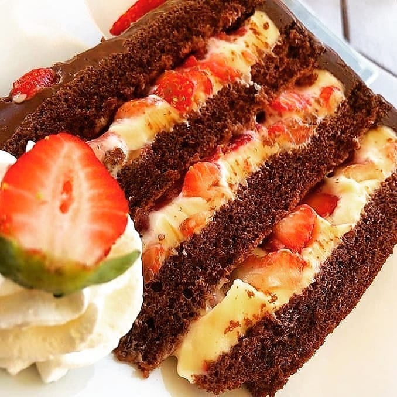

Bolo de chocolate com creme belga e morangos
Fofinho, prático, rápido e delicioso: essa é realmente a MELHOR receita de bolo de chocolate do mundo! Veja como fazer esse bolo incrível
na sua própria casa!

6 ovos
2 xícaras de chá de açúcar
1 colher de sobremesa de baunilha
2 e 1/2 xícaras de chá farinha de trigo
1 colher de sopa de fermento
1/2 xícara de chá de chocolate em pó
1/2 xícara de chá de água
1 colher de sopa de óleo
1 lata de leite condensado
3 latas de leite ( usar a lata de leite condensando como medida )
3 colheres sopa de maisena
2 gemas sem pele
1 colher de chá de baunilha
morangos picados
MODO DE PREPARO
Primeiro bata por 10 min na batedeira os ovos,o açucar e a baunilha
2 Peneire com farinha o chocolate em po e juntos misturando tudo na batedeira
3 Acrescente a agua e a colher de oleo
4 Misture com um fuet ou colher bem devagar
5 Coloque a massa em uma assadeira 330 cm de diametro ou 34x23 e asse em forno 180 graus por aproximadamente 36 minutos.
1 Coloque todos os ingredientes em uma panela
2 Leve ao fogo mexendo sempre ate formar um creme
3 Retire do fogo e passe para uma vasilha
4 Cubra o mesmo para nao criar casca, ou jogue o açucar por cima apos esfriar
5 Coloque na batedeira e adicione uma lata de creme de leite s/soro
6 Bata ate ficar bem cremoso.